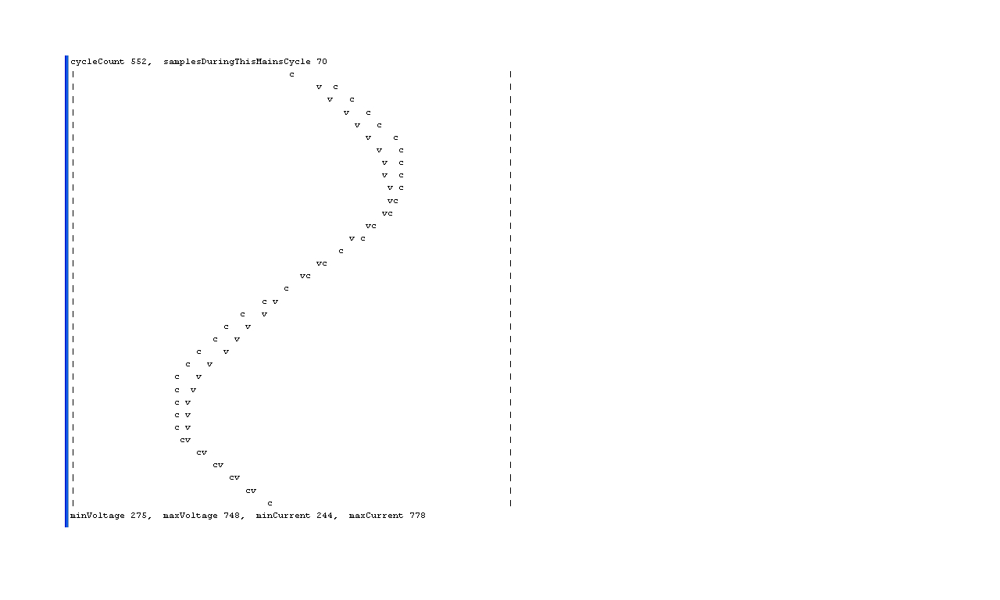

Hi everyone.
First of all, i want to apologie for my poor english.
I live in Brazil, and I have a little home automatization projetc with Asterisk + Arduino + PHP
The project it's running very well, until i need to know if does or not current in a wire!!
I'm using this current sensor:
http://dx.com/p/ac-ta12-100-current-sensor-module-for-arduino-white-red-...
If a set the arduino programing like this:
int sensorValue = analogRead(A0);
Serial.println(sensorValue);
If the light it's on, the value in the Serial monitor keeps uping and down (0 ~ 50), if light's off, the value on serial monitor, lock's on "0".
How can i know if the light it's on, or off?
Tank you
Re: [arduino] How to mensure if does current in a wire - UP codes 03-05
I think you need to connect the sensor like this. Look at the code for the emonTx, and use the basic sketch emonTx_CT123.ino from GitHub You will also need to download and use EmonLib
You need to use CT 1 only, but you must change the input pin for the one you wish to use. After
you can write
if (ct1.Irms > 5.0) { // current is greater than 5 - the light is on, do something } else { // it is 5.0 or less - the light is off, do something else }Change "5.0" to a number that is less than the current you see when the light is on.
You do not need the RFM12 parts, nor CT2 or CT3, so you can delete these lines:
rf12_initialize(nodeID, freq, networkGroup); // initialize RF
rf12_sleep(RF12_SLEEP);
send_rf_data();
Re: [arduino] How to mensure if does current in a wire - UP codes 03-05
Re: [arduino] How to mensure if does current in a wire - UP codes 03-05
All right Robert Wall, tank you very much!!
I have some questions yet:
#define FILTERSETTLETIME 5000 // Do i need this?
const int CT1 = 1 // What means that variable?
// What its that all? I need?
#define freq RF12_433MHZ
const int nodeID = 10;
const int networkGroup = 210;
const int UNO = 1; // My arduino it's MEGA 2560, this it's correct?
#include <avr/wdt.h>
#include "EmonLib.h"
EnergyMonitor ct1,ct2,ct3; // Create instances for each CT channel
// ================================================================
typedef struct { int power1, power2, power3, battery; } PayloadTX; // create structure - a neat way of packaging data for RF
comms PayloadTX emontx; //I NEED DO DECLARE ALL THOSE POWERS?
const int LEDpin = 9;
boolean settled = false; // WHAT this variable DOES?
void setup()
{
Serial.begin(9600);
Serial.print("Node: "); // I all read aks before, but what it's that "node" i don't need right?
Serial.print(nodeID);
Serial.print(" Freq: ");
if (freq == RF12_433MHZ) Serial.print("433Mhz");
if (freq == RF12_868MHZ) Serial.print("868Mhz");
if (freq == RF12_915MHZ) Serial.print("915Mhz");
Serial.print(" Network: ");
Serial.println(networkGroup);
// What it's all this?
if (CT1) ct1.currentTX(1, 111.1); // Setup emonTX CT channel (ADC input, calibration)
if (CT2) ct2.currentTX(2, 111.1); // Calibration factor = CT ratio / burden resistance
if (CT3) ct3.currentTX(3, 111.1); // Calibration factor = (100A / 0.05A) / 33 Ohms
rf12_initialize(nodeID, freq, networkGroup); // initialize RFM12B
rf12_sleep(RF12_SLEEP);
//==========================================================
pinMode(LEDpin, OUTPUT); // Setup indicator LED
digitalWrite(LEDpin, HIGH);
if (UNO) wdt_enable(WDTO_8S); // Enable anti crash (restart) watchdog if UNO bootloader is selected. Watchdog does not work with duemilanove bootloader // Restarts emonTx if sketch hangs for more than 8s
}
void loop()
{
if (CT1) { //here it's the most important part of this programing. How can i make to know if the light its on or of, then do something?
emontx.power1 = ct1.calcIrms(1480) * 240.0; //ct.calcIrms(number of wavelengths sample)*AC RMS voltage
Serial.print(emontx.power1);
}
emontx.battery = ct1.readVcc(); //I need this? //read emonTx battey (supply voltage)
Serial.print(" "); Serial.print(emontx.battery);
Serial.println(); delay(100);
// because millis() returns to zero after 50 days !
if (!settled && millis() > FILTERSETTLETIME) settled = true;
if (settled) // send data only after filters have settled
{
send_rf_data(); // *SEND RF DATA* - see emontx_lib
digitalWrite(LEDpin, HIGH); delay(2); digitalWrite(LEDpin, LOW); // flash LED
emontx_sleep(5); // sleep or delay in seconds - see emontx_lib
}
}
I sorry for too much questions.Once more, tank you
Re: [arduino] How to mensure if does current in a wire - UP codes 03-05
I have not tested it, but I think this will work. It will read the current transformer 1480 times over a time of about 0.25 s and calculate the average current and print it. Then it will go to sleep for 5 s and repeat the measurement.
You will not get an accurate measurement for the first 5 s after power-on because the filter will not be at the correct operating point (FILTRERSETTLETIME).
#define FILTERSETTLETIME 5000
const int UNO = 1; // My arduino it's MEGA 2560, this it's correct? -It enables the watchdog timer.
// Set UNO = 0 if your bootloader does not have the watchdog timer
#include <avr/wdt.h>
#include "EmonLib.h"
EnergyMonitor ct1; // Create an instance
// ================================================================
const int LEDpin = 9;
boolean settled = false; // WHAT this variable DOES? - allows time for the high pass filter to settle.
void setup()
{
Serial.begin(9600);
ct1.currentTX(1, 111.1); // Setup emonTX CT channel (ADC input, calibration)
// Calibration factor = CT ratio / burden resistance
// Calibration factor = (100A / 0.05A) / 33 Ohms
//==========================================================
pinMode(LEDpin, OUTPUT); // Setup indicator LED
digitalWrite(LEDpin, HIGH);
if (UNO) wdt_enable(WDTO_8S); // Enable anti crash (restart) watchdog if UNO bootloader
// is selected. Watchdog does not work with duemilanove
// bootloader. Restarts emonTx if sketch hangs for more than 8s
}
void loop()
{
ct1.calcIrms(1480); //ct.calcIrms(number of wavelengths sample)
if (ct1.Irms > 5.0)
{ // current is greater than 5 - the light is on, do something
}
else
{ // it is 5.0 or less - the light is off, do something else
}
// because millis() returns to zero after 50 days !
if (!settled && millis() > FILTERSETTLETIME) settled = true;
if (settled) // send data only after filters have settled
{
digitalWrite(LEDpin, HIGH); delay(2); digitalWrite(LEDpin, LOW); // flash LED
Serial.print("I = ");Serial.println(ct1.Irms);
emontx_sleep(5); // sleep or delay in seconds - see emontx_lib
}
}
Re: [arduino] How to mensure if does current in a wire - UP codes 03-05
The link you posted earlier, Robert, didn't work for me. My browser shows this 404 page as:
https://github.com/openenergymonitor/emonTxFirmware/blob/master/emonTx_C...
But if the characters after the ".ino" are removed, it works fine:
https://github.com/openenergymonitor/emonTxFirmware/blob/master/emonTx_CT123/emonTx_CT123.ino
(the odd characters at the end of the line don't appear in the browser's address window, only when I copy and paste that address here)
Re: [arduino] How to mensure if does current in a wire - UP codes 03-05
Thanks. The 404 was due to the way the "link" was parsed and automatically turned into a link by Drupal (the back-end code behind this website) - it had added a space that GitHub didn't ignore.
Re: [arduino] How to mensure if does current in a wire - UP codes 03-05
Robert Walll Tank you so much!!
I don't understand yet where a configrue the pin who will read the current,
LedPin it's pin nº 9, who will blik (HIGH or LOW)
I conect the current sensor in a alanog port of my ARDUINO, how i set then up?
Tanks
Re: [arduino] How to mensure if does current in a wire - UP codes 03-05
I think you need to connect the sensor like this, but I am not certain. The link you gave to the sensor contained confusing and probably incorrect technical information.
Re: [arduino] How to mensure if does current in a wire - UP codes 03-05
Hi Igor, in your first message, you wrote:
If a set the arduino programing like this:
int sensorValue = analogRead(A0);
Serial.println(sensorValue);
If the light it's on, the value in the Serial monitor keeps uping and down (0 ~ 50), if light's off, the value on serial monitor, lock's on "0".
How can i know if the light it's on, or off?
I hope you now realise that the Arduino cannot measure current using a single analogRead() statement. You need to use a program (sketch) which calls analogRead() many times and then works out the average value. Robert has already given you some information about how to do this.
If you simply connect a CT to the Arduino, then you would probably get exactly the kind of behaviour that you were seeing. One of the tasks of the current sensor circuit is to bias the signal at 2.5V which is the mid-point of the Arduino's ADC range. Then you would see values which lie equally either side of the midpoint, e.g. 450 - 550, rather than being right near the bottom of the range (i.e. 0 to 50).
Re: [arduino] How to mensure if does current in a wire - UP codes 03-05
Hi everyone!! I have some upgrades in this project.
I using the exemple who follow the emon.Library off current only. Well done...
When I use the exemple "current only" and upload the code for arduino, he whorks very well! When the light it's OFF the value in the monitor keeps in 0.00 or -0.00 and when the light it's on the value keep between -0.49 ~ -0.51.
But when I apply this code in my code of this project, wher I turn ON the lights, the value keeps correct, but my problem is, when I shut down the light!! The monitor goes NUT"s!! The valou goes to - 4.00 -3.48 i have to send an "1" to normalize the values.
Can you guys, please, help me?
Follow the code i using:
// Incluindo bibliotecas (includiing libraries) #include "EmonLib.h" // Include Emon Library EnergyMonitor emon1; // Create an instance //Declarando variaveis globais (globals variables) char readpin[2] = ""; //Variavel que recebe os dados da Serial (3 digitos) int porta = 0; // Variavel que ira receber os pinos char sensorValue; //Variavel que recebe os valores dos sensores //Variaveis para conversao de char, para int (calculos) int d = 0; int u = 0; int c = 0; //=============================================================== void setup(){ Serial.begin(9600); Serial.println("Iniciando o Programa); pinMode(13,OUTPUT); emon1.current(13, 111.1); // Calibrando o pino de entrada } void loop(){ double Irms = emon1.calcIrms(1480) * 240.0; // Is this correct? Serial.println(Irms); //this print it's only for debug propose delay(100); if (Serial.available() > 0) { for (int i=0;i<3;i++){ //Armazena na string (array de char) readpin[i] = Serial.read(); delay(10); } d = (int) (readpin[0] - '0'); u = (int) (readpin[1] - '0'); c = (int) (readpin[2] - '0'); porta = (int) (d*10+u); // d * 10 + u; // porta = 13; Serial.println(porta); Serial.println(c); switch(c){ case 1: delay(20); Serial.println("Ligando luz"); Serial.println(Irms); if (Irms > -0.15){ delay(200); digitalWrite(porta,!digitalRead(porta)); int Irms = 0; } delay(20); break; // SO FAR IT's ALL RIGHT!! MY PROBLEM BEGGIN WHEN I SHUTDOWN THE LIGHT's!!! case 0: delay(20); Serial.println("Desligando luz"); Serial.println(Irms); //Irms = '\0'; if (Irms < -0.10){ delay(200); digitalWrite(porta,!digitalRead(porta)); // byte Irms = 0.00; } delay(20); break; case 2: sensorValue = analogRead(porta); delay(200); if (sensorValue > 0){ Serial.print(1); delay(20); } else { Serial.print(0); delay(20); } delay(20); break; } //digitalWrite(porta,c); } }Re: [arduino] How to mensure if does current in a wire - UP codes 03-05
What is the light that you are talking about? The CT measures AC current that is flowing along one core of a cable. That current could be taken by any kind of load, such as a heater or a light bulb. If you want to detect when your room goes from light to dark, you would need a different type of sensor which can measure illumination (brightness) rather than AC current.
Here is a display which shows the AC current that is taken by my 3 kW kettle. I am also measuring the voltage, but there is no need for you to do this. You could measure and display just the current by itself.

The sketch that I used for this is my RawSamplesTool. You can download this tool and run it for yourself. Because it gives you a display rather than just numbers, you may find it more helpful than the standard OEM current-only sketch. All of the tools that I've posted are listed at http://openenergymonitor.org/emon/node/1757
I hope this is useful. If you could tell us exactly what you are trying to do, we may be able to give you more help.
Re: [arduino] How to mensure if does current in a wire - UP codes 03-05
calypso_rae sorry by my poor description.
When a I said light, i means a commun lamp connect in a trii way wich a commun switch, just like this:
http://4.bp.blogspot.com/-P0xxbggy_0g/T_D2Bsfx_EI/AAAAAAAAAJE/r_8MpTfuqO...
The left switch its a commum triway switch, and the right, its my relay board.
I put the current sensor in the positive wire who goes to the lamp (right switch),
Re: [arduino] How to mensure if does current in a wire - UP codes 03-05
The circuit that you've shown is what is known here as a 2-way light circuit. This means that the light can be operated using either of the switches.
The Arduino can only detect when current is flowing in the wire that goes through its CT. Not all of the wires in that diagram carry current when the light is on. It depends on which switches you have operated.
If you clip your CT around one of the main wires, either Live or Neutral, it should always be able to detect whether the light is on or off. When the light is off, the sketch should detect 0W. When the light is on, the sketch should detect 60W or whatever power your light is taking.
Have you tried my RawSamplesTool yet? This sketch will show you whether your Voltage and Current sensors are giving good waveforms.
Re: [arduino] How to mensure if does current in a wire - UP codes 03-05
All Right Calypso, tankyou very mych.
I have seen you RawSampleTool and its a very nice sketch.
The current sensor is flowing the Live wire (relay - lamp), and what I need, its justa a simple scketh to know if does or not current in this wire, so i can make something, just this, can you please help me?
Exemple
I declare a variable to recived informaton of the current sensor,
If does current in the wire (how you said, 60W, or something ...), do something, if not (0W) does something else.
Just this.
Can you help me please?
Tank you
Re: [arduino] How to mensure if does current in a wire - UP codes 03-05
On Fri, 22/02/2013 - 09:48, I explained that you can't just take a single measurement from the CT. Readings from the CT have to be processed by some kind of sketch which calculates the amount of current that is flowing. Looking at your code, I'm not sure that you have understood this point yet.
The simplest sketch for you to use is probably the current-only one in the Building Blocks section. This sketch will only work if your sensors are set up correctly. You can check this using RawSamplesTool, but it does require a voltage sensor.
If you only have a current sensor (not a voltage sensor) then you could check that it is working correctly by using my MinAndMaxValues tool. When there is no current in your wire, the values should stay at around 512. But when the light is turned on, the Min and Max values should immediately change.
Once you can get results like this, you will know that your current sensor is working. Then we can help you with the rest of your sketch.
Robin
Re: [arduino] How to mensure if does current in a wire - UP codes 03-05
In your code, in setup(), you need an extra " character in the line:
Serial.println("Iniciando o Programa);Without this, your code would not compile for me.
To use any results from the current-only sketch, you need to extract the data from inside the EnergyMonitor structure, of which there is one instance, called emonTx. That's what the following two lines are doing:
double Irms = emon1.calcIrms(1480) * 240.0; // Is this correct? Serial.println(Irms); //this print it's only for debug proposeTo find out whether the circuit is on or off, you could just compare the value of Irms with some constant value:
if (Irms > 0.1)
<circuit is on>
else
<circuit is off>
Does that make sense?